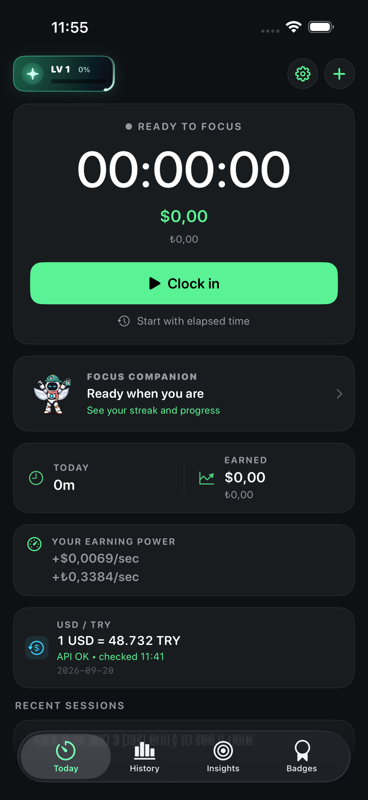

Sol üst level göstergesi · Yeni efektler
Videodaki küçük rozetler ana ekranın sol üstünde kullanılan bileşenin kendisi. Çerçeveyi dolaşan yıldız, yörünge, yıldız parçacıkları, güneş ışınları ve aurora.
50 seviyede bir değişen hareketler
Ana ekrandaki gerçek boyutu
